RUIBench: What Makes a Good Robot-Use Interface?
arXiv Preprint · 2026.11
Want to find out more about me? Visit 👉 🖼️ Gallery. Feel free to email me to discuss my work, explore a possible collaboration, or simply say hello 🤝.
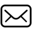
Email aaroncaozj@gmail.com Google Scholar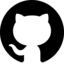
GitHub Hugging Face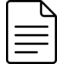
CV (EN)I am an M.Sc. student in Electrical Engineering at the National University of Singapore, working on Robot Learning at Show Lab, advised by Prof. Mike Zheng Shou. My research interests include Generalist Robot Policies, Embodied Agents, and Diffusion Models.
I am also an AI Scientist Intern at Mikomiko, working on agent-powered image generation and editing models.
Previously, I received my B.Eng. in Automation from Zhejiang University, where my early research focused on control in robot systems.
arXiv Preprint · 2026.11
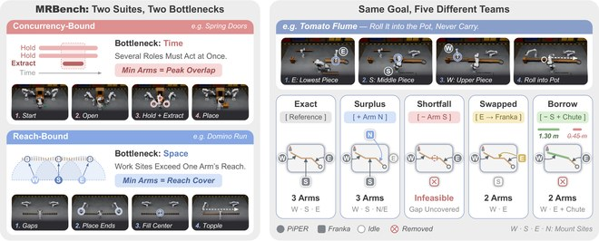
arXiv Preprint · 2026.11
arXiv Preprint · 2026.09
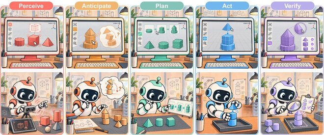
arXiv Preprint · 2026.09
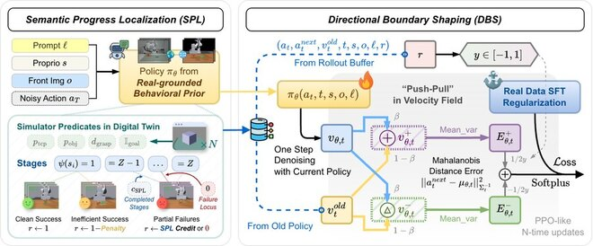
2026 Conference on Robot Learning (CoRL)· 2026.05
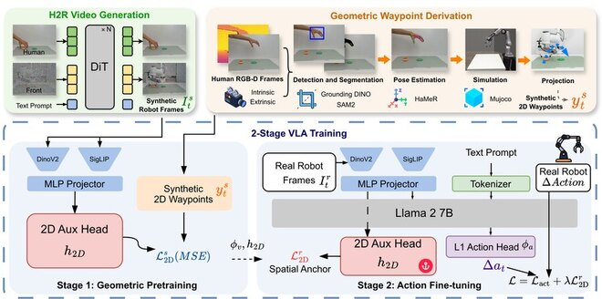
2026 Conference on Robot Learning (CoRL)· 2026.05
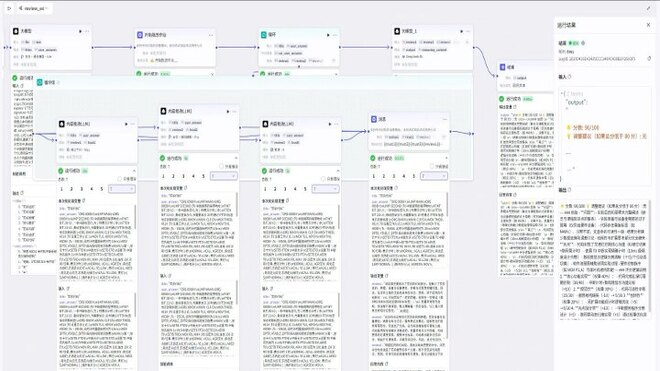
Research and Exploration in Laboratory · 2026.02
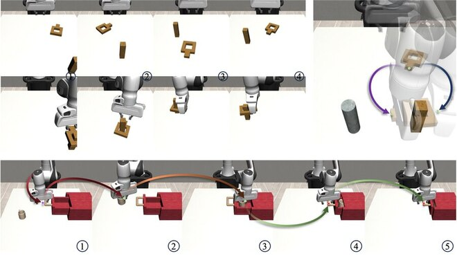
2024 China Automation Congress (CAC), EI · 2024.11
Supported by the NSFC under Grant No. U21A20485
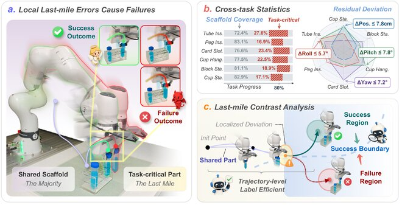
CCF-A Conference Under Review · 2026.05
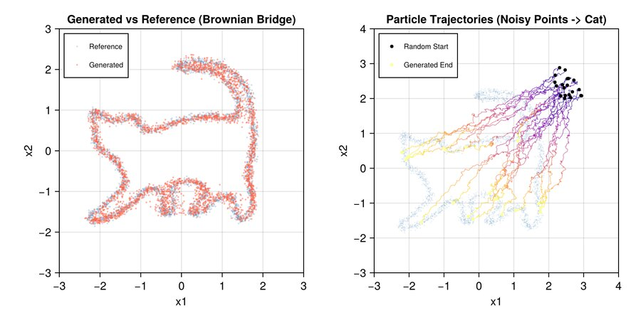
Course Blog for NUS EE5311 · 2026.03

China Campus · 2025.06